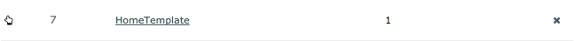
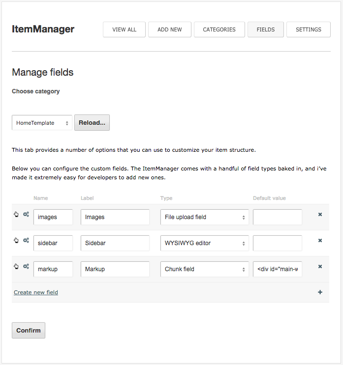
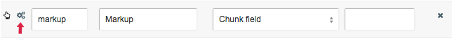
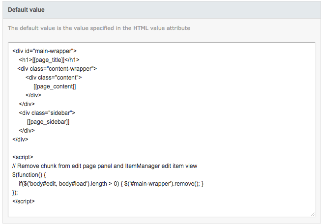
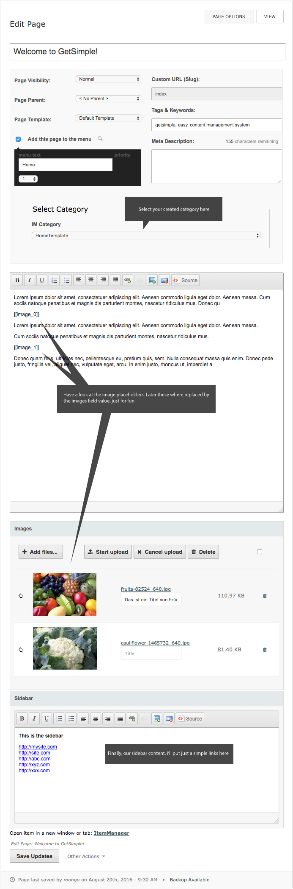

Normally, the HTML markup for GS pages is defined in themes (templates) and the content of the components can be added global under the components menu. In this example I want to show you an alternative way how you can create your content a little bit more page-based.
You will need following plugins (just download it and install in the order listed bellow):
After that, create a category, name it as you want (I have named mine HomeTemplate, as it includes the markup for the home site). You can add as many categories as you want, in my example I only had one category.

Go to the Fields menu and create 3 fields: images, sidebar and markup:

Open Edit field menu for the Chunk field:

There you can define your markup for the pages that belong to this category:

In my example I only have very simle markup with main column for the page content and a sidebar, that shows unique page-based content. Then you put [[placeholder]] tags where you want dynamic content. For each placeholder you will have a corresponding field value appearing automaticaly in frontend by ItemManager's template engine. There is my default chunk value:
The JavaScript that you see in the code above is important to ensure to hide the chunk output inside Page Edit menu. The chunk field value should not be shown there.
Once you have added the default value to the chunk field, you can now assign an item to the page. Go to the Pages menu and select a page that you're intending to edit. I use the index page for testing purposes:

Ok, let us take a look at the template.php file, as you can see it has a very complicated structure:
The body contains just a simple getContent() function call, that we first need to create.
To achieve this, we use the best a functions.php file:
What we are still missing is the styles.css file. If you're working with your own CSS you can skip this section. The style.css looks like this:
That's it!
If everything goes well following page should appear on your screen: DEMO